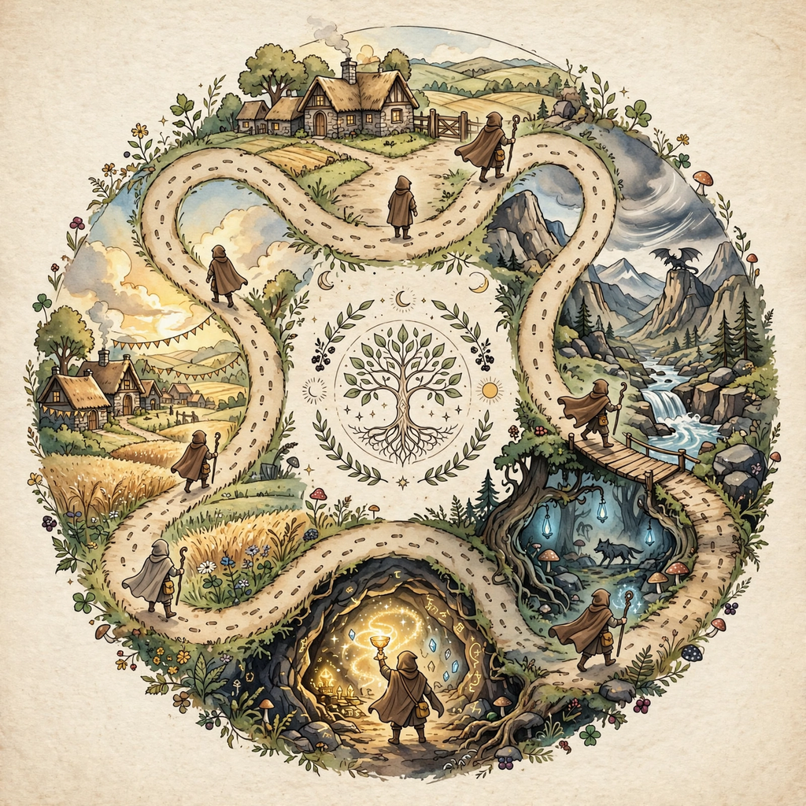

From Wikipedia, the free encyclopedia
The monomyth, also called the hero's journey, is the common template of stories that involve a hero who goes on an adventure, is victorious in a decisive crisis, and comes home changed or transformed. The concept was popularized by Joseph Campbell in his 1949 book The Hero with a Thousand Faces, drawing on the work of earlier scholars of mythology and on Sigmund Freud's and Carl Jung's psychological theories.

Campbell borrowed the term "monomyth" from James Joyce's Finnegans Wake. He argued that myths from cultures around the world share a fundamental structure, summarised as: "A hero ventures forth from the world of common day into a region of supernatural wonder: fabulous forces are there encountered and a decisive victory is won: the hero comes back from this mysterious adventure with the power to bestow boons on his fellow man."
Campbell divided the journey into three acts — Departure, Initiation, and Return — subdivided into seventeen stages:
| Act | Stages |
|---|---|
| Departure | 1. The Call to Adventure · 2. Refusal of the Call · 3. Supernatural Aid · 4. The Crossing of the First Threshold · 5. Belly of the Whale |
| Initiation | 6. The Road of Trials · 7. The Meeting with the Goddess · 8. Woman as the Temptress · 9. Atonement with the Father · 10. Apotheosis · 11. The Ultimate Boon |
| Return | 12. Refusal of the Return · 13. The Magic Flight · 14. Rescue from Without · 15. The Crossing of the Return Threshold · 16. Master of the Two Worlds · 17. Freedom to Live |
Campbell cited the myths of Osiris, Prometheus, the Buddha, Moses, and Jesus among the figures whose stories follow the pattern, as well as literary works such as the Odyssey. Later writers simplified Campbell's schema: screenwriter Christopher Vogler reduced it to twelve stages in The Writer's Journey (1992), a memo-turned-book widely used in Hollywood.
Folklorists and mythologists have criticised the monomyth as overly reductive, arguing that Campbell selected and trimmed myths to fit the pattern, glossed over cultural differences, and privileged male protagonists. Others note that the template has become a prescriptive formula in popular fiction and film, sometimes at the expense of narrative variety. Nevertheless, its influence on modern storytelling — including Star Wars, The Lion King, and much fantasy literature — remains considerable.
See also: Joseph Campbell · Archetype · Mythology · Narrative structure